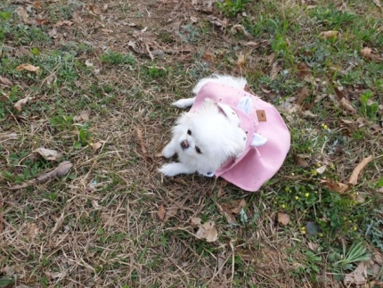
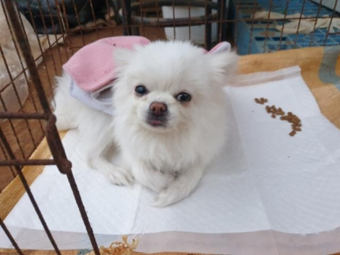
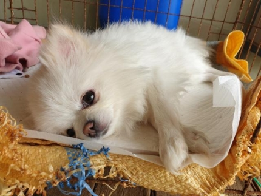
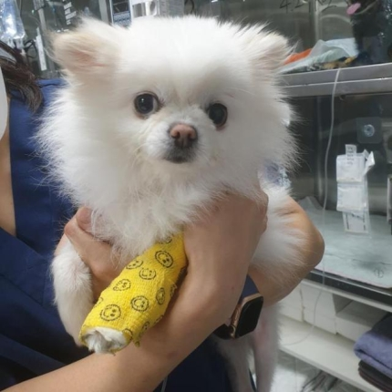
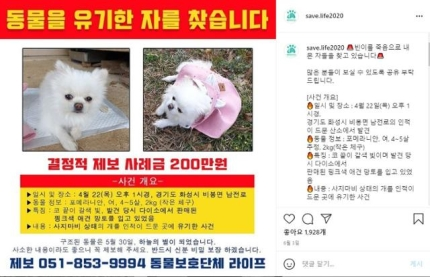
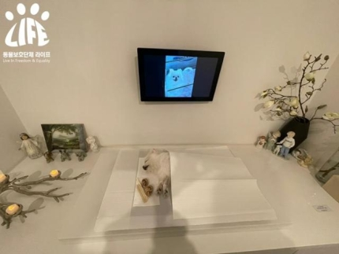

The story of a quadriplegic Pomeranian abandoned next to oxygen "Organic Animal Rescuer"
Registration Date Author Life Attachment activitydata_06_06 ▼Article Links▼ https://n.news.naver.com/article/469/0000613054?type=main{kind=link}
"I brought an abandoned Pomeranian to the mountain, but I can't move my arms and legs. Can you help me?"
Informant Park Su-jin
On April 21, a Pomeranian dressed in pink was found in the mountains next to a residential street in the city of Gyeonggi Mars. Courtesy of Mr. Park Soo-jin
On April 22, the head of the animal protection group Life Sim In-sup received an urgent call from Mr. Pak Soo-jin, 36, who said that the dog he found on the Bibong-myeon South Battlefield in Gyeonggi Mars City was unable to move. Life was located in Busan and could not immediately bring the dog. Instead, he asked Park to take the dog to a cooperative hospital in Anyang City.
Dressed up and abandoned in the mountains
Bean, who was unable to move his arms and legs on the day of the rescue, but ate the feed. Courtesy of Mr. Park Soo-jin
The day before (April 21), at about 5:30 p.m., Mr. Park was driving home with his mother when he spotted a small pink object in the mountains next to the 1-lane road. There seemed to be movement, so I got out of the car and checked it out, and it was a white Pomeranian wearing a pink cloak next to the bong. It was strange that strangers didn't approach him, bark, or run away, but as it turned out, the dog was paralyzed in his arms and legs and was unable to move. Park rushed the dog home and took him some food and water. The dog ate feed and water without being able to cover his body.
Park Su-jin asked Life for help while looking for a way to help her dog. Courtesy of Mr. Park Soo-jin
Later, while posting a post in an online café and looking for a way to help the dog, she found out about the animal protection organization Life. Park explained, "I didn't know how to help the dog, so I received a response from Life that I could help him while I was in a hurry," and that he "took the dog to the hospital when I asked him to be taken to a partner hospital."
The cause of quadriplegia is myelopathy
Vienna, who was being treated at the hospital. At one time, the condition improved to the point of walking. Life Offerings
On the morning of the 23rd, the veterinarian at the cooperative hospital suggested that the dog be transferred to a large hospital where magnetic resonance imaging (MRI) could be taken to make an accurate diagnosis, and the Life activist moved the dog to the second hospital in Nowon-gu, Seoul. The examination showed that the cerebrospinal fluid did not flow smoothly, resulting in a spinal cord cavity, a disease that formed into a water bag and damaged the spinal nerves. The estimated age of the dog was about 4 to 5 years old.
Sim said, "Couldn't a mobile dog have come alone to a place where people are rare?" We saw no chance of losing the dog and focused on finding the person who had deserted." "I gave the name Bean to a dog that was going to live on a small body of 2.4kg," he said, adding, "Above all, I wanted to keep the dog that was abandoned as sick to the end, so I was committed to treatment."
It's been 2 weeks, but the deserter is a graveyard.
Life created flyers online and distributed them on social media to find the one who abandoned Binyi. The timing of the rescue of the leaflet statue differed from the article by one day, and Life confirmed that there had been a mistake in the production of the leaflet. Life Instagram Capture
Life activists created online leaflets to search for organics for a reward of 2 million won. They commissioned the Mars West Police Station to investigate, and on the 6th of last month, they visited the site where Binh was found, to investigate whether there were any clues to identify the organic, including the location of a closed-circuit (CC) TV. Under the Animal Protection Act, abandoning an animal would result in a fine of up to 3 million won.
"The act of abandoning a mobile dog in a rare place is the result of the belief that a dog can die, and that it doesn't matter if it dies," Sim explained, "and I reported it as unintentional cruelty to animals and filed a complaint with the police." Life activists confirmed that the cloak on Bin-Yi was only sold in the brick-and-mortar stores of the Uniform Street Household Goods Store. In response, they visited more than 20 of the veterinary clinics on Mars close to the Household Goods Store and tried to find the organics, but they did not achieve any results. The police also conducted CCTV analysis and investigative investigations, but found no clues.
Vienna, once recovered, but eventually returned to the kingdom of heaven.
Binh received intensive care, but eventually passed away. Life Offerings
While Life and the police were searching for an organizer, Binh Yi underwent intensive care. Spinal cord cosmos was managed steadily by taking medication instead of surgery, but suddenly contracted pancreatitis and peritonitis, which once hit a major high. Fortunately, on the 14th of last month, after only three weeks of hospitalization, she regained her health and began to devote herself to treating spinal cavitosis. Vinh showed signs of improvement, taking steps at a time, and Life was preparing to find Vin's temporary guardian and adoptee. However, a sudden heart abnormality caused her to pass away on the 30th of last month.
"It is very unfortunate that we have abandoned the dog because it is a disabled dog, and the cost of treatment is burdensome," said Shim In-sup, "We have vowed to restore Bin's health and find a good family."
▲Source: See link to the above article, Korea Daily reporter Ko Eun-kyung